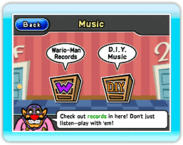

Puedes escuchar discos en la sección de Music (música) del Wario-Man Super Store (súper tienda de Wario-Man).

● Menú de música
Apunta a una de las dos opciones del menú y oprime  .
.
·Wario-Man Records (discos de Wario-Man)
Puedes escuchar los discos incluidos en WarioWare: D.I.Y. Showcase o jugar con ellos. Elige un disco y después selecciona  .
.
·D.I.Y. Music (música de D.I.Y.)
Aquí encontrarás los discos que recibas en el Distribution Center (centro de distribución). Puedes usarlos del mismo modo que en la sección de Wario-Man Records. Además, si apuntas a un disco y oprimes +  para agarrarlo, podrás moverlo a otra estantería o a otro sitio de la misma estantería. En la sección D.I.Y. Music, puedes guardar un máximo de 72 discos. Para borrar un disco, selecciónalo y luego elige
para agarrarlo, podrás moverlo a otra estantería o a otro sitio de la misma estantería. En la sección D.I.Y. Music, puedes guardar un máximo de 72 discos. Para borrar un disco, selecciónalo y luego elige  .
.
Nota: No podrás recuperar los discos que hayas borrado.
● Cómo escuchar discos
Cuando hayas seleccionado un disco, puedes decidir si quieres escucharlo o jugar con él eligiendo  o respectivamente.
o respectivamente.
·Listen (escuchar)
En este modo escucharás la canción automáticamente. Puedes apuntar al personaje que aparece en la pantalla y oprimir para agarrarlo. Mueve el personaje a la izquierda para ralentizar el tempo de la canción y hacia la derecha para que vaya más deprisa.
Nota: El personaje se mueve automáticamente hacia la derecha. No podrás cambiar su dirección.
·Play (jugar)
Controla el personaje que aparece en la pantalla y toca las notas musicales y las marcas de ritmo para tocar los sonidos correspondientes y aumentar tu puntuación.
Nota: Intenta no tocar las estrellas, acercarte demasiado a los peces o caerte al agua. Si lo haces, tendrás que esperar unos momentos para poder volver a jugar.
Controles

Izquierda/Derecha |
Moverse |
|
 |
Subir rápidamente |
Abajo |
Bajar rápidamente |
|
 |
Subir |
 |
 |
 |
 |
Música disponible
| Compositor |
Canción |
| Johann Strauss Sr. |
Radetzky March |
| Alexander Borodin |
Polovetsian Dances |
| E. Humperdinck |
Hansel and Gretel |
| Richard Wagner |
The Mastersingers of Nuremberg |
| Felix Mendelssohn |
A Midsummer Night's Dream |
Canción tradicional
norteamericana |
Oklahoma Mixer |
|
 |
 |
 |
 |